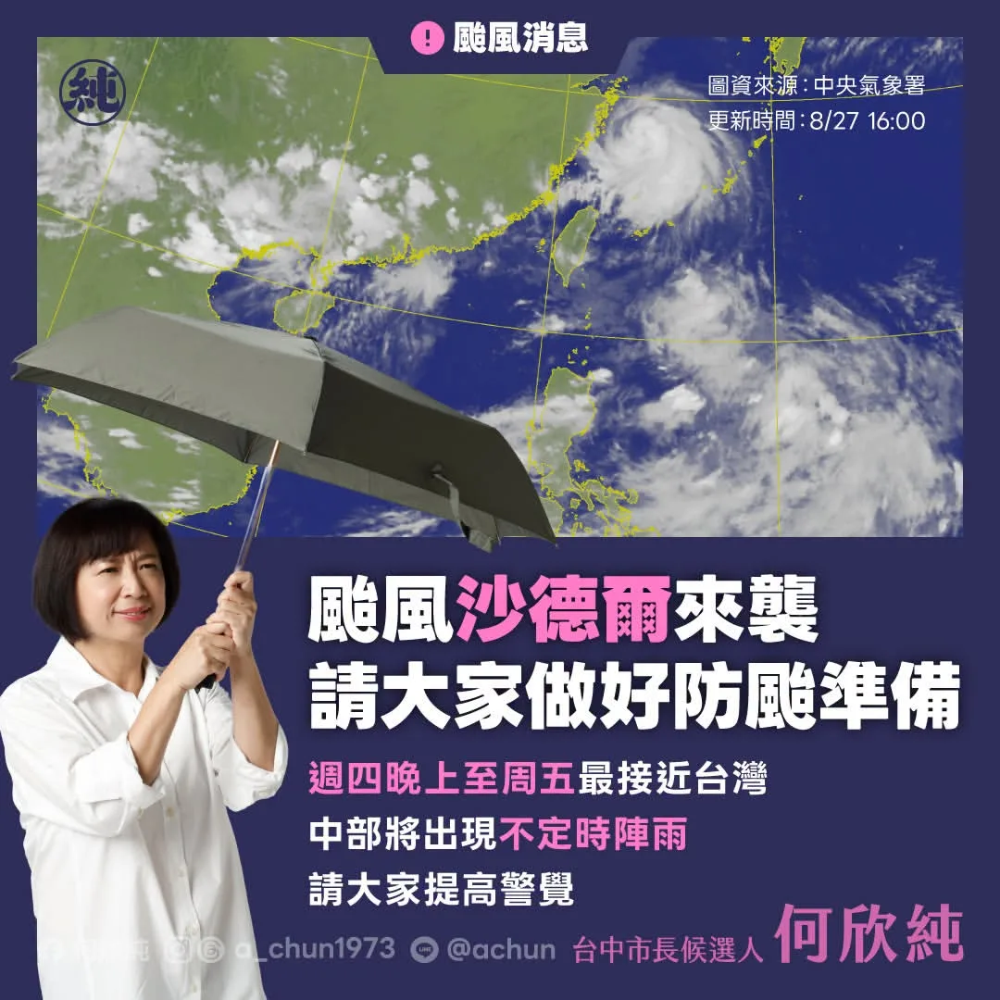

何欣純a_chun1973

@a_chun1973:來到西屯水堀頭黃昏市場，和大家見面、聊聊天👋 從攤商熱情的招呼，再到鄉親一句句「加油」，都讓我感受到滿滿的溫暖。 謝謝每一位給我鼓勵及建議的朋友，未來我會繼續走遍台中各個角落，多聽、多看、多了解，和大家一起把台中變得更好！
Accounts
| 平台 | 帳號 | 已收錄貼文 | 最後更新 |
|---|---|---|---|
| 官網 | https://a-chun.tw/ | 14 | 2026-08-26 15:00 |
| https://www.facebook.com/94achun/ | 97 | 2026-08-28 14:31 | |
| https://www.instagram.com/a_chun1973/ | 56 | 2026-08-28 18:25 | |
| Threads | https://www.threads.com/@a_chun1973 | 102 | 2026-08-29 17:52 |
| YouTube | https://www.youtube.com/channel/UCFcDN6t7tJ7qObwtyBQHdRg | 113 | 2026-08-29 11:00 |
| LINE 官方帳號 | https://page.line.me/beu1231o | 0 | — |
Timeline
顯示 382 / 382 則
@a_chun1973:來到西屯水堀頭黃昏市場，和大家見面、聊聊天👋 從攤商熱情的招呼，再到鄉親一句句「加油」，都讓我感受到滿滿的溫暖。 謝謝每一位給我鼓勵及建議的朋友，未來我會繼續走遍台中各個角落，多聽、多看、多了解，和大家一起把台中變得更好！

古蹟可以不只是古蹟！何欣純談英國求學悟出的活化小tips

勞工朋友的辛苦，我一直放在心上。 近日和台中市總工會理事長謝宗佑及各職業工會代表座談，傾聽第一線勞工需求，討論如何進一步保障勞工權益。 針對工會代表反映的老人健保眷屬保費問題，未來我會進一步盤點市府可以協助的空間，和中央攜手減輕勞工家庭負擔，讓勞工朋友獲得更完整的照顧與保障。 我也提出「六心勞工政見」：顧健康、穩就業、安心托、增創能、強職安、欣樂齡，從工作到生活，照顧勞工每一個人生階段。 未來我會和工會並肩努力，做勞工最堅實的後盾，打造一座友善勞工的「欣好台中市」！ #心存大台中 #市長換欣_台中創新
等了8年，捷運藍線動工了！ 台中捷運路網要全力有效率推進！中央地方一起，做好交通配套，工程時程公開透明，讓市民清楚。 新台中，交給何欣純！

等了8年，捷運藍線動工了！ 台中捷運路網要全力有效率推進！中央地方一起，做好交通配套，工程時程公開透明，讓市民清楚。 新台中，交給何欣純！

台中交通三個大步！何欣純綠線延伸大坑 4年內動工 拼完工
500元寵物券怎麼拿？何欣純講清楚

強化國家安全、提升自我防衛、國防自主能力，我支持！！

台中好消息再+1！繼上週行政院核定 #捷運橘線 可行性研究後，行政院再度核定「台63線銜接國道3號中投交流道改善工程」可行性評估報告，而且總經費49.98億將由中央全額負擔！ 中投公路是台中屯區往返市區、銜接國道的重要交通動脈，未來工程完工後，可望改善交流道周邊壅塞及國道銜接效率，讓台中交通更加順暢。 今年4月，我就在立法院交通委員會質詢交通部長 陳世凱，關切計畫進度、要求中央加速推動，如今計畫終得核定，是重要的新階段起點。 接下來我會持續追蹤工程進度、爭取中央加速規劃，讓台中市民早日享有更順暢的交通環境！ #心存大台中 #市長換欣_台中創新

立法院被砍掉的4700億無人機預算，砍掉的是台中產業的機會與活水！ 希望能趕緊補救、趕緊通過，讓台中勞工朋友與產業安心！

競選總部9/12成立！馬戲團＋文化復興＋青年局 阿純大公開

@a_chun1973:辦公室同仁準備五款常見辣椒醬，要我來場盲猜大挑戰！ 🌶️ 身為無辣不歡的資深辣椒系選手（？），這題對我來說應該只是桌頂拈柑（toh-tíng ni-kam）而已吧～ 👇 辣純派集合！留言推薦你心中的必吃辣椒／辣椒醬吧！

台中毛孩38萬！何欣純「寵愛毛孩5大安心」＋500元寵物券一次講

@a_chun1973:等了8年，捷運藍線動工了！ 台中捷運路網要全力有效率推進！中央地方一起，做好交通配套，工程時程公開透明，讓市民清楚。 新台中，交給何欣純！

@a_chun1973:中央氣象署已發布海警，提醒大家做好防颱準備！ 今晚至明天是颱風最靠近台灣的時候，中部可能出現不定時陣雨，大家外出時務必多加留意，避免前往海邊及山區，並隨時掌握最新颱風動態喔。 更多資訊請見中央氣象署網站： https://www.cwa.gov.tw/V8/C/

@a_chun1973:江啟臣委員，你今天會進立法院議場表決嗎？投下支持台中廣大勞工朋友及產業投的一票！ 延會最後一天的院會，要處理無人載具特別條例，我希望你能勇敢進場投票。過去在國防軍購特別條例，刪去4700億無人機預算，你沒聲音；為補救被刪砍預算，行政院提出特別條例，我6度向你鞠躬請託不要擋，你置之不理；今天表決，我希望你能現身表態！ 昨天你以立法院副院長之姿率團訪日回國，說提案建立民主與韌性的供應鏈體系，但國防安全與自主、展現防衛決心，在今天要表決的無人載具條例，不就是最根本嗎？口頭支持、總該化為實際行動了吧！ 此外，昨晚你面對記者詢問，如何看待盧市長用台中市府公帑認購中秋月餅的問題，你說，這3天都在國外，這部分還不清楚，待了解後會再跟大家報告。所以，今天會有答覆嗎？ 市民有許多問題想問你，但你貴為立法院副院長，各場合都有大批隨員可幫你避開媒體詢問。不過，同為競選台中市長，容我提醒，競選過程中對重大議題表態，都是民主選舉的一環，也是對市民朋友最基本的尊重！

何欣純專訪-強化國家安全、提升自我防衛、國防自主能力，我支持！！

毛孩不僅是寵物，更是我們的家人，因此我推出「寵愛毛孩5大安心、1個加碼」，從環境改善、醫療照護、飼主課程、安心認養到寵物產業，全面升級相關政策，希望讓台中成為毛孩可以安心生活的友善城市。 如果你也認同牠們值得更好的照顧，歡迎收看影片，也請幫忙分享，讓更多人一起關心毛孩的權益🐈🐕

@a_chun1973:我提出「寵愛毛孩5大安心、1個加碼」，打造更全面、更友善的寵物欣樂園！ 1️⃣ 友善環境安心 升級公園寵物專區、串聯毛孩友善店家。 2️⃣ 醫療量能安心 鼓勵動物醫院增加夜間急診，培育動物醫事助理人才。 3️⃣ 飼主學習安心 免費提供照護、行為、清潔美容及生命教育課程。 4️⃣ 動物領養安心 提升收容品質、打擊非法繁殖；公立動物之家認養再加碼500元疫苗補助＋免費基礎健檢。 5️⃣ 寵物產業安心 強化寵物食品、寄養、美容等專業培訓。 ⭐ 再加碼500元「台中版寵物券」 設籍台中、毛孩完成寵物登記即可申請，減輕飼主負擔，也支持在地寵物產業。

何欣純專訪-立法院被砍掉的4700億無人機預算，砍掉的是台中產業的機會與活水！

@a_chun1973:看到謝金河董事長感嘆發文「誰在阻擋台灣的無人機產業？」 我深有同感，且為台中傳產及無人機業者感到憂心忡忡！ 2400億元的無人載具條例通過，謝董認為，如果這個法案對產業發展有利，那麼資本市場一定強烈大漲回應，不過，股市卻大跌回應，尤其一些代表性的個股都跌很重。這顯示，無人載具條例雖通過，但卻內藏重重機關，也讓無人機產業發展備受波折。 謝董話鋒一轉，台灣發展無人機產業，除了國防需求之外，也是產業陷入瓶頸的傳統產業轉型的新契機，尤其是台中市的工具機產業、五金零件產業等，但，事關台灣生存的最大敵人卻使盡全力封鎖這些產業。 謝董很感慨，只有台灣最奇怪，生活在這塊土地上的人，他們愛別人的國家，而且還拿刀捅自己！這是台灣的最不幸！ 我非常認同謝董所言，勞工、產業、與民意都清楚表示，台灣應該在國家安全下、經濟、民生、產業繼續往前大步發展，身為國會議員，為所當為、言所當言。如果只是口惠實不至、閃躲不表態，就是默許丶眼睜睜看著台中產業被扼殺。 我遺憾、也很難過，但我不會放棄、我要繼續拚搏，為這片土地為產業的未來而努力！

🌶️ 身為資深辣椒系選手，這題我應該很可以吧？ 辦公室同仁居然準備了五款常見辣椒醬，要我來場蒙眼盲猜大挑戰！ 究竟我這個「辣椒專家」是真材實料，還是辣到翻車？看下去就知道🔥 辣純派集合！

新台中，交給何欣純！等了8年，捷運藍線動工了！台中捷運路網要全力有效率推進！中央地方一起，做好交通配套，工程時程公開透明，讓市民清楚。

綠線延伸大坑！何欣純4年內動工＋拼完工

颱風 #沙德爾 逐漸接近台灣，中央氣象署已發布海警，提醒大家做好防颱準備！ 今晚至明天是颱風最靠近台灣的時候，中部可能出現不定時陣雨，提醒大家外出時務必多加留意，避免前往海邊及山區，並隨時掌握最新颱風動態。 更多資訊請見中央氣象署網站： https://www.cwa.gov.tw/V8/C/

江啟臣委員，你今天會進立法院議場表決嗎？投下支持台中廣大勞工朋友及產業的一票！ 延會最後一天的院會，要處理無人載具特別條例，我希望你能勇敢進場投票。過去在國防軍購特別條例，刪去4700億無人機預算，你沒聲音；為補救被刪砍預算，行政院提出特別條例，我6度向你鞠躬請託不要擋，你置之不理；今天表決，我希望你能現身表態！ 昨天你以立法院副院長之姿率團訪日回國，說提案建立民主與韌性的供應鏈體系，但國防安全與自主、展現防衛決心，在今天要表決的無人載具條例，不就是最根本嗎？口頭支持、總該化為實際行動了吧！ 此外，昨晚你面對記者詢問，如何看待盧市長用台中市府公帑認購中秋月餅的問題，你說，這3天都在國外，這部分還不清楚，待了解後會再跟大家報告。所以，今天會有答覆嗎？ 市民有許多問題想問你，但你貴為立法院副院長，各場合都有大批隨員可幫你避開媒體詢問。不過，同為競選台中市長，容我提醒，競選過程中對重大議題表態，都是民主選舉的一環，也是對市民朋友最基本的尊重！

@a_chun1973:強化國家安全、提升自我防衛、國防自主能力，我支持！！
政院核定台 63 線銜接國 3 何欣純：完善南台中路網 立法委員何欣純爭取改善屯區交通再傳好消息 […] 〈 政院核定台 63 線銜接國 3 何欣純：完善南台中路網 〉這篇文章最早發佈於《 何欣純官方網站｜2026 台中市長候選人 》。

@a_chun1973:立法院被砍掉的4700億無人機預算，砍掉的是台中產業的機會與活水！ 希望能趕緊補救、趕緊通過，讓台中勞工朋友與產業安心！

立法院被砍掉的4700億無人機預算，砍掉的是台中產業的機會與活水！ 希望能趕緊補救、趕緊通過，讓台中勞工朋友與產業安心！